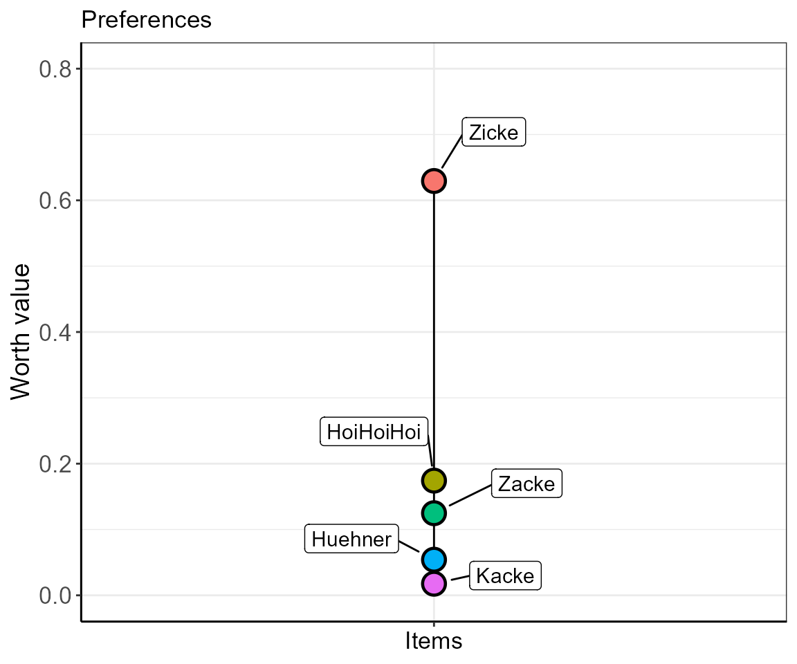
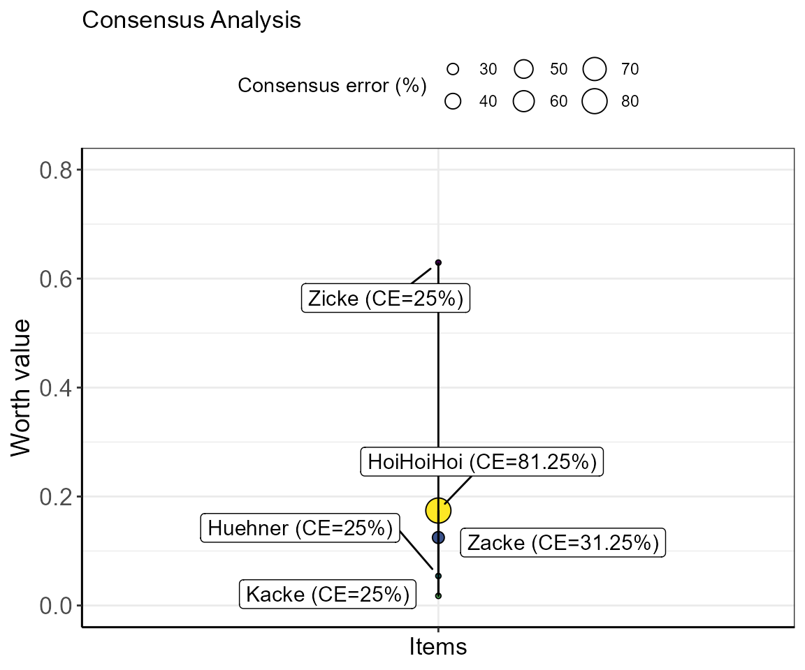
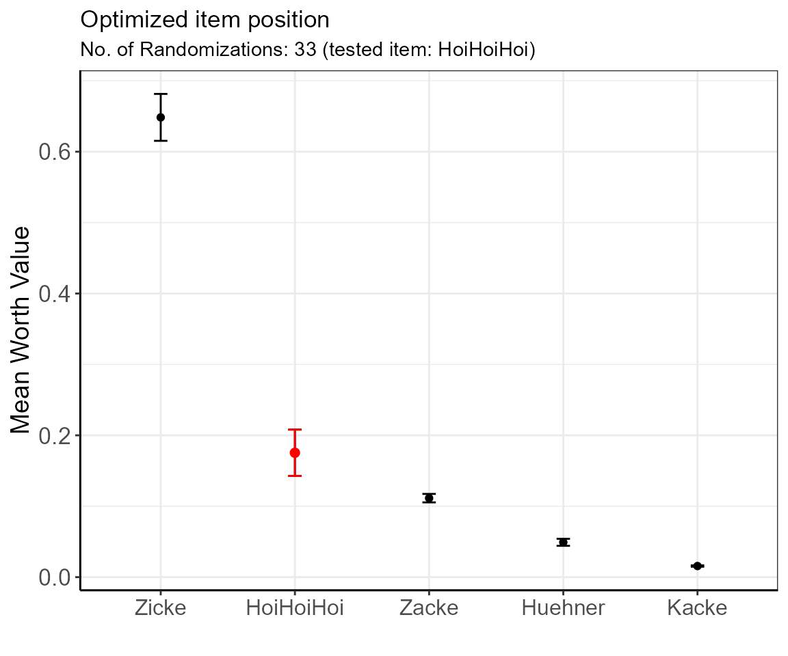
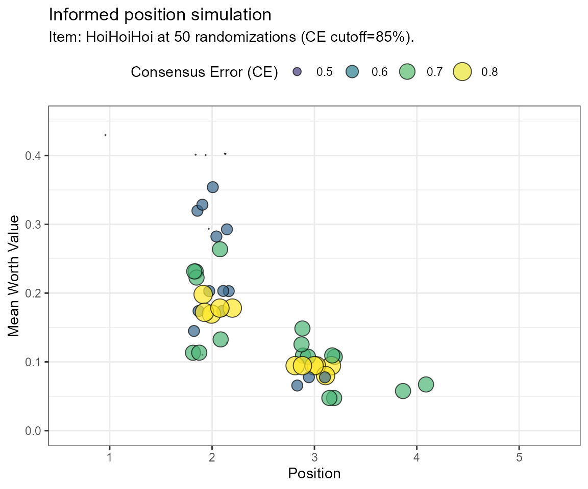

simsalRbim Examples
Steven R. Talbot
Dana Pfefferle
Lars Lewejohann
Source:vignettes/simsalRbim_examples.Rmd
simsalRbim_examples.RmdPreference Tests
For this Vignette, we will use the artificial ZickeZacke dataset, a perfectly balanced set of paired choice preference tests, integrated in simsalRbim. In this dataset every subject was tested with every possible items combination, but one (‘HoiHoiHoi’) that was tested with only X subjects. In addition, there are two item combinations with ‘HoiHoiHoi’ that resulted in equal responses (no preference, ties). Let’s see if we can evaluate the item’s position. For this purpose, we will employ three different strategies which are covered by the following examples.
Example 1 - The calculation of worth values
First, the data are loaded. In this example, internal data are used. You can use the bimload function to import data from a variety of formats.
Define the item to be tested (simOpt) and a Ground Truth (GT) of items that it is tested with. Any items that are not defined here, will not be used in the analysis. This may lead to incomplete conclusions. So be careful what you put
simOpt and GT are then used in the bimpre function to preprocess the data into a unified format bimpre also identifies ties. As you can see from the example below, the ties get marked in the ‘tie’ column.
dat <- ZickeZacke
simOpt <- "HoiHoiHoi"
GT <- c("Zicke", "Zacke", "Huehner", "Kacke" )
predat <- bimpre(dat=dat, GT=GT, simOpt=simOpt)
#> simsalRbim: 1 tie(s) marked.In the next step, we calculate the worth values of all items specified in the simOpt and the GT term. This uses a non-linear GNM model from the prefmod[@prefmodcit] package to model the data and to transform the estimates into worth values. The showPlot object can be set to “worth” providing the worth values, or “coefs” providing the model coefficients in the output.
Note, that when randOP is set to TRUE, the attribution of ties in terms of the dependent results variable in the GNM model will be random. This means that each time this function is executed, the worth values will change. This is an integral part of this package and will be used in the simulations later.
worth <- bimworth(ydata = predat,
GT = GT,
simOpt = simOpt,
randOP = FALSE,
showPlot = "worth")
In this plot, you see that the item “HoiHoiHoi” ranks between “Zicke” and “Zacke” scaling closer to “Zacke”.
LINK CONSENSUS Score
Consensus scores will be displayed as a function of bubble size as well as printed as numbers in the plot and an output table.
The “ZickeZacke” dataset elicits two warnings The warnings indicate that the number of subjects tested with the “HoiHoiHoi” item may be too low. The second warning shows the same for the number of items tested. To get more reliable results, both should be increased.
By setting filtersim=TRUE (default), the subjects warning can be removed. The command removes all missing item combinations for which ties were set. This will effectively reduce the number of subjects that are available for any test, resulting in differently weighted mean in the consensus error calculation.
w_errors <- bimeval(ydata = predat,
worth = worth,
GT = GT,
simOpt = simOpt,
filtersim = FALSE,
showPlot = TRUE)
#> Warning in bimeval(ydata = predat, worth = worth, GT = GT, simOpt = simOpt, : simsalRbim: No. of SUBJECTS WARNING!
#> The number of subjects you have provided for testing the simOpt='HoiHoiHoi' item is probably insufficient!
#> Try increasing the number of subjects.
#> You are currently below 80% data coverage for that item.
#> The consensus error may be biased!
#> Your provided-to-simulated subjects ratio is at: 50%.
#> Warning in bimeval(ydata = predat, worth = worth, GT = GT, simOpt = simOpt, : simsalRbim: No. of ITEMS WARNING!
#> The number of item tests you have provided for testing the simOpt='HoiHoiHoi' item is probably insufficient!
#> Try increasing the number of item combinations.
#> You are currently below 80% item coverage for that item.
#> The consensus error may be biased!
#> Your provided-to-simulated items ratio is at: 40%.
The size of the bubble indicates the consensus error of each item. This means, the smaller the bubble (or error) the more agreement there is between subjects regarding the positioning of the respective item. In the example of the item “Zicke”, the value of 0% indicates that all subjects that were presented with item combinations including “Zicke” were in full agreement in terms of preference, i.e., no intransitivity was detected. The position of “Zicke” can, hence, be assumed to be warranted.
In contrast, the consensus error for item “HoiHoiHoi” was calculated with 25%. Meaning that 25% of subjects indicated different preference in item combinations including “HoiHoiHoi” (i.e., in 25% of the item triplets an intransitivity was detected). Taken this together with the displayed warnings for that item, the positioning of it is relatively insecure.
Example 2 - uninformed item position simulation
Once the rank and scale of a number of items is known (see example 1), one might want to sequentially extend it with additional items. For extending an existing scale it might not be feasible to conduct all possible binary preference tests. In cases of incomplete binary comparisons, we propose a simulation approach, allowing to rank items with a reasonable precision.
Items that were not tested with all possible item combinations are attributed a tie. In the GNM model, results can assume the states c(-1,0,1). By randomizing this outcome, the degrees of freedom for the unknown combinations get constrained so that the estimate of the item becomes more secure.This logic is used in the bimUninformed function to simulate an **uninformed*’** worth calculation for optimal item positioning.
We differentiate between ‘uninformed’ (this example) and ‘informed’ (see example 3) item positioning simulations. In uninformed item positioning, no a priori knowledge about item transitivity is available. Hence, it is assumed that all choices are transitive, i.e., if A<B and B<C, then A<C.
The function bimUninformed allows the determination of the number of necessary randomization steps. Here, for any number of randomization steps, an ANOVA with a correction for multiple comparisons (MCP) is used to compare the worth values within a simulation run. As long as the calculated worth values are not significantly different, the items’ position is not secured.
Each increase in the number of randomizations will decrease the number of degrees of freedom. Eventually, this will lead to a saturation of the mean adjusted p-values in the MCP tests and a decrease in errors. We define the number of required randomizations as the point at which the adjusted p-value hits zero. For ambiguous data, this can mean a lot of required randomizations. This is a heuristic! So, be prepared to try this out manually for your data.
# We will run 100 randomizations in this example to find the optimal cutoff
cutoff <- bimUninformed(ydata = predat,
GT = GT,
simOpt = simOpt,
limitToRun = 100,
ylim = c(-1,2) )
cutoff$cutoff
#> [1] 65The simulation proposes 65 randomizations. This result can be displayed with 95% confidence intervals using the bimpos function. Here, we will insert the number of required randomizations.
pos <- bimpos(ydata = predat,
GT = GT,
simOpt = simOpt,
limitToRun = cutoff$cutoff, # 65
showPlot = TRUE )
| item | Mean.W | SD.W | n.W | se.W | lower.ci.W | upper.ci.W | pos |
|---|---|---|---|---|---|---|---|
| Zicke | 0.6053021 | 0.0896190 | 65 | 0.0111159 | 0.5830956 | 0.6275086 | 1 |
| HoiHoiHoi | 0.1871260 | 0.0811795 | 65 | 0.0100691 | 0.1670107 | 0.2072413 | 2 |
| Zacke | 0.1406748 | 0.0146409 | 65 | 0.0018160 | 0.1370469 | 0.1443026 | 3 |
| Huehner | 0.0523842 | 0.0172419 | 65 | 0.0021386 | 0.0481119 | 0.0566565 | 4 |
| Kacke | 0.0145130 | 0.0019947 | 65 | 0.0002474 | 0.0140187 | 0.0150073 | 5 |
The table shows the ordered estimated mean worth values for each item with errors. The items’ positions are secured as there are no overlapping 95% confidence intervals.
Compared to results in example 1 where the confidence in the positioning of “HoiHoiHoi” was low, we now we can be rather sure that it is in position 2. (If in doubt, increase the number of randomizations until the items are separated.)
Example 3 - informed item position simulation
In the last example, we will perform an informed simulation of the data, including incomplete binary comparisons. In an informed simulation intransitive and transitive choices are considered. Intransitivity is defined as A<B and B<C, but A>C.
By calculating the intransitivity of the item combinations, we can estimate which choices were inconsistent and include this in our evaluation. We use a frequency distribution to decide on the most likely position of items.
frqnc <- bimsim(ydata = predat,
GT = GT,
simOpt = simOpt,
limitToRun = 78,
fval = 1,
showPlot = TRUE,
ylim = c(0,0.7))
| Var1 | Freq |
|---|---|
| 2 | 0.7051 |
| 3 | 0.2692 |
| 4 | 0.0256 |
The table shows, that the items with a low intransitivity ratio (Iratio), i.e., a high transitivity, are mostly in position 2. Therefore, for the ‘HoiHoiHoi’ item, we can opt for position 2.